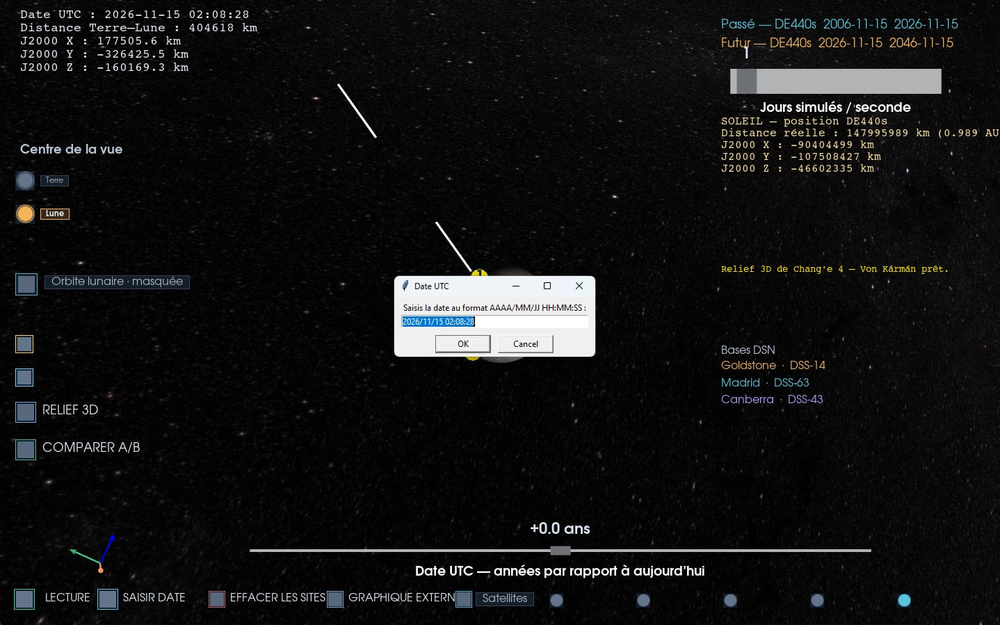

Utiliser CisLunar
Sélectionne un site lunaire, explore son relief et compare deux dates d’alunissage.
1. Régler la date
Dans la fenêtre principale, choisis Lune sous Centre de la vue. Clique sur SAISIR DATE, saisis une date UTC au format AAAA/MM/JJ HH:MM:SS et valide avec Entrée. Le curseur de date permet aussi de parcourir la période.


2. Ajouter un site
Choisis Apollo 15 dans la barre du bas, ou clique brièvement sur la surface de la Lune pour ajouter un point personnalisé. Ajoute un deuxième site si tu veux comparer deux lieux à la même date.
3. Examiner le relief
Clique sur RELIEF 3D pour ouvrir le relief du site sélectionné. Repère le point central et les courbes de niveau. Dans cette fenêtre, un clic droit sur le relief déplace le point central.

4. Ouvrir les graphiques du site
Clique sur GRAPHIQUE EXTERNE, puis utilise Choisir les sites pour filtrer les courbes. Sélectionne Éclairement pour examiner l’évolution de la lumière reçue sur une surface horizontale.
5. Comparer deux scénarios
Ouvre COMPARER A/B. Choisis un site et un Début UTC au format AAAA-MM-JJ HH:MM. Clique sur Dupliquer A → B, puis change seulement la date de B. Garde par exemple les réglages initiaux, 30 jours et un pas de 10 minutes, puis clique sur Calculer la comparaison.
6. Lire la comparaison
Compare les bandes Soleil, Terre visible et Lien direct au même temps écoulé depuis chaque départ. Utilise Détails A/B pour consulter les durées et les transitions estimées. Le pourcentage d’éclairement représente la lumière directe sur une surface horizontale, sans modéliser le rendement d’un panneau.
Comprendre les relais et les limites
La chronologie distingue la visibilité de la Terre, le lien direct et les routes par relais. Les orbites de démonstration de Queqiao-2 et d’Okina sont simulées. La couverture calculée est une estimation géométrique. Une liaison réelle dépend aussi du matériel radio et de la disponibilité des stations.